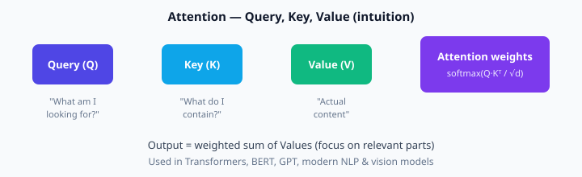

Module 5 — Advanced AI and ML
Deep Learning Models · Optimization · Cloud-Based Training (GPU/TPU)
CNNs — Convolutional Neural Networks
CNNs are designed for grid-like data (images). Instead of connecting every pixel to every neuron, they use small filters (kernels) that slide across the image and detect local patterns (edges, textures, shapes).

CNN flow: Input → Conv+ReLU → Pool → Conv → Pool → Dense → Output

Typical CNN architecture (Wikimedia)
Convolution — tiny numerical example
3×3 image patch and 2×2 filter:
Image: Filter:
1 2 0 1 0
2 1 1 0 1
0 1 2Top-left 2×2 region: 1·1 + 2·0 + 2·0 + 1·1 = 2
Slide right: 2·1 + 0·0 + 1·0 + 1·1 = 3
Slide down-left: 2·1 + 1·0 + 0·0 + 1·1 = 3
Slide down-right: 1·1 + 1·0 + 1·0 + 2·1 = 3
Feature map result: [[2, 3], [3, 3]]
3Blue1Brown — neural network foundations (revisit if needed before CNNs)
RNNs — Sequences over time
Recurrent Neural Networks · LSTM · GRU ideas
Why recurrence?
Text, speech, and time series have order. An RNN keeps a hidden state that is updated at every time step, so past information can influence the present prediction.
\(x_t\) = input at time t, \(h_t\) = hidden state, \(h_{t-1}\) = previous state.
Suppose 1-D: x₁=0.5, h₀=0, W_xh=0.4, W_hh=0.3, b=0.1
- z = 0.4·0.5 + 0.3·0 + 0.1 = 0.3
- h₁ = tanh(0.3) ≈ 0.29
LSTM / GRU (short idea)
Plain RNNs forget long-range information (vanishing gradients). LSTM and GRU add gates that learn what to keep, update, or forget — much better for long sentences and long time series.
Transformers & Attention
The architecture behind BERT, GPT, and modern AI

Attention: Query asks, Keys answer relevance, Values supply content
Self-attention in one paragraph
Every token looks at every other token. For each token we form a Query, Key and Value vector. Similarity of Query with all Keys (dot products) becomes weights after softmax. Output is the weighted sum of Values. This lets the model focus on relevant words no matter how far they are.
After scaling, scores between token A and tokens [A, B] = [2.0, 0.5]
- softmax([2.0, 0.5]) ≈ [0.82, 0.18]
- If V_A = [1, 0], V_B = [0, 1] → output ≈ 0.82·[1,0] + 0.18·[0,1] = [0.82, 0.18]
Optimization Techniques
Regularization · Dropout · Learning-rate tuning
Regularization
- L2 (weight decay) — add λ·‖w‖² to the loss so large weights are penalised.
- L1 — encourages sparse weights (many zeros).
- Dropout — randomly set a fraction of activations to 0 during training so the net cannot rely on any single neuron.
Layer has 4 neurons. Dropout rate 0.5 → on average 2 are “off” each training step. At test time all are on, but activations are scaled. Result: ensemble-like behaviour, less overfitting.
Learning-rate schedules
Start higher, then decay (step decay, cosine, warm-up then decay). Too high → loss explodes; too low → training crawls.
Cloud-Based Training (GPU / TPU on GCP)
Distributed training · Vertex AI · accelerators
Why accelerators?
Matrix multiplies dominate deep learning. GPUs and TPUs do thousands of them in parallel. On GCP you attach them to Vertex AI training jobs or Workbench VMs.
Practical pattern
- Package training code + requirements in a container (or use a pre-built Vertex image).
- Point the job at data in Cloud Storage / BigQuery.
- Select machine type with GPU (e.g. NVIDIA T4/V100/A100) or TPU.
- Enable distributed strategy if using multiple devices.
- Log metrics; save checkpoints to a bucket; register the final model.
In self-attention, the softmax is applied to which scores?
Module 5 — Key takeaways
- CNNs: local filters + pooling for images.
- RNNs/LSTM: hidden state for sequences; gates fix long-term memory.
- Transformers: attention lets every token look at every other token.
- Regularization + dropout + LR schedules control overfitting and training speed.
- Train heavy models on GCP GPUs/TPUs via Vertex AI.